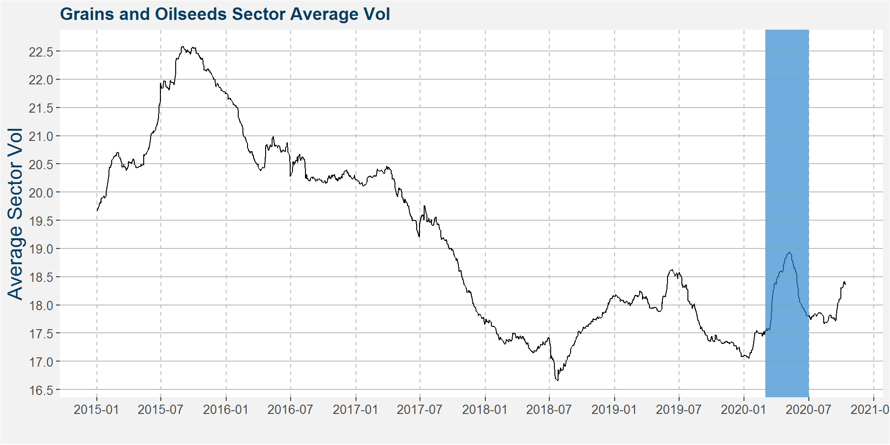
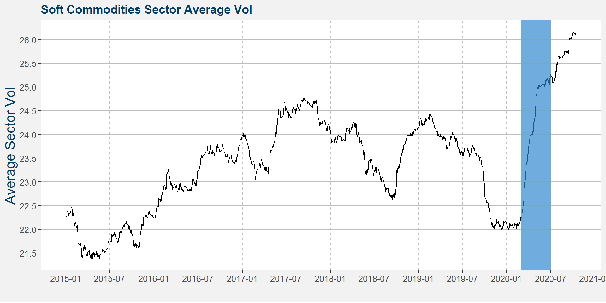
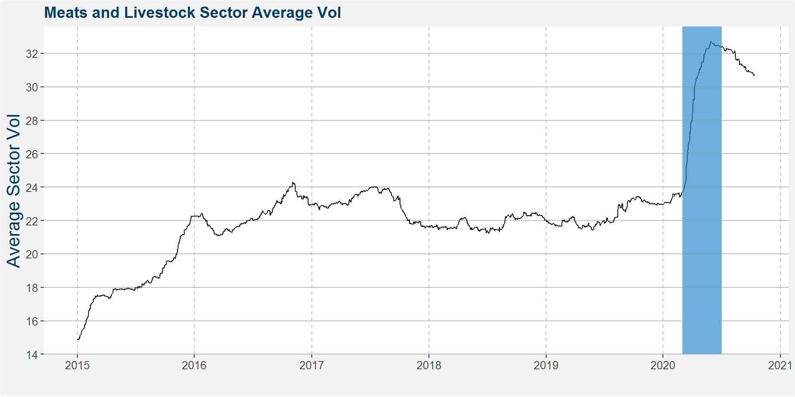
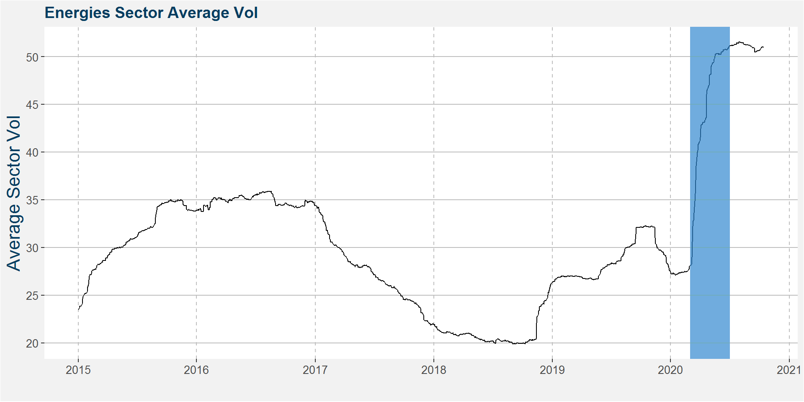
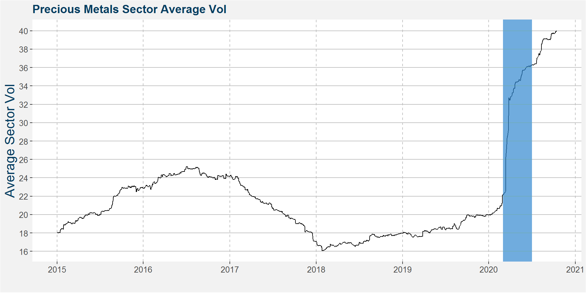
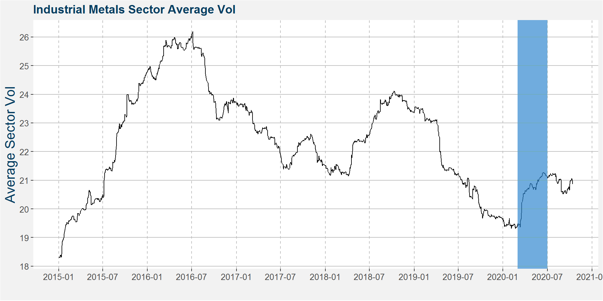
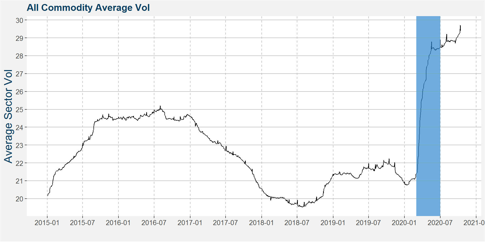
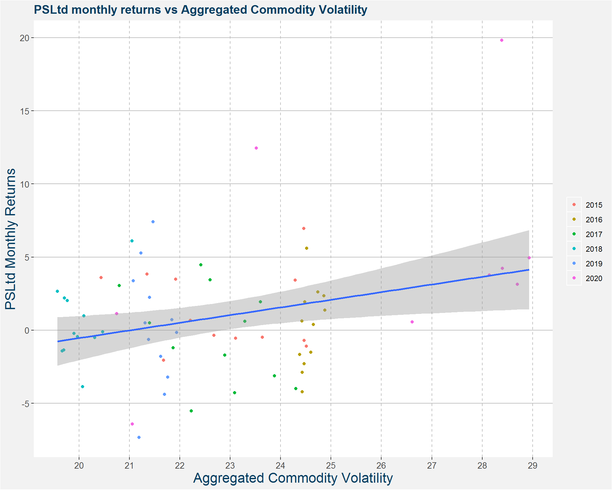

Section 4 Historical Volatility
Here we calculate 252 day (1 trading year) rolling volatility across our universe of commodities. We annualise the volatility and define it mathematically as
\[ \text{vol} = \sigma( \text{return} ) \times \sqrt{252} \] where \(\sigma\) denotes the standard deviation. Note that this volatility measure is different to the one used in section 2. Here the volatility is measured over a quarter rather than a trading year.
There is a technical issue when performing the backwards adjustments for the rolled series. Since we are interested in a statistic calculated on the returns we need to choose a roll adjustment measure that preserves returns. Another ways it to keep track of the rolled returns and to construct an ETF price of the rolled series. This can be thought of as the value of $1 invested at the start of the time series.
Below we show an example of the two data series for South African white maize. The plot on the left shows the ETF price, i.e. value of $1 invested at the start of the time series. The right hand plot shows the roll adjusted price series. Notice that the normal price roll adjusted series can have negative values. This can happen during sustained periods of backwardation. Notice that the occurance of negative prices (values) are not possible in the ETF price case.
Figure 4.1: South African White Maize (WZ) ETF and normal roll adjusted price series
In the following we study the rolling volatilities of the different commodity sectors.
4.1 Grains and Oilseeds volatility
The plot below shows the rolling volatility of the different commodities in the Grains and Oilseeds sector. For convenience we have removed Chinese commodities since we do not currently trade those. Notice that the majority of the commodities showed decreasing volatility from 2015 up the the most recent data.
Figure 4.2: Grains and oilseeds rolling volatility, without Chinese commodities
The figure below shows that grain and oilseed volatility peaked halfway through 2015. Thereafter volatility collapsed up to July 2018 before start to increase again. The period from March through June 2020 - main corona virus crisis time - is highlighted in blue. Note that volatility is trending upward, but still on the lower side.

4.2 Soft Commodities volatility
Most of the soft commodities pictured below show increasing volatilities during 2020.
Figure 4.3: Soft commodities rolling volatility, without Chinese commodities
Aggregating the volatilities across the soft commodities we can see a general uptrend in the volatilities. The uptrend in volatility during 2020 is also quite interesting in that it coincided with the blunt of the corona virus crisis.

4.3 Meats and Livestock volatility
Figure 4.4: Meats and Livestock rolling volatility
The effect of the corona virus crisis on the meats and livestock sector is interesting. The large spike in vol coincides with the onset of the virus crisis. In the case of Lean hogs the volatility was already increasing because of outbreaks of African Swine Flue in China where they had to perform severe herd culling. The increased volatility in the meats and livestock will reduce CTA exposure. As the vol normalised the notional exposure, at least for CTAs, will increase.

4.4 Energies volatility
Figure 4.5: Energies rolling volatility
The spike in energy vol has been well documented in the media and can clearly be seen in the plots above and in the aggregated sector plot below.

4.5 Precious Metals volatility
Figure 4.6: Precious metals rolling volatility
The volatility profiles of the precious metals looks surprisingly like those of the energy sector. This makes sense froma liquidity point of view as these instruments are some of the most widely

4.6 Industrial Metals volatility
Figure 4.7: Industrial metals rolling volatility
The industrial metals volatility peaked halfway through 2016 and slowly decreased from there, however there has also been an increase in volatility during the corona virus pandemic.

4.7 All Commodities
When we aggregate the volatility over all commodities, except Chinese commodities, we get the plot below. Here we see a general decrease in volatility after the peak midway through 2016. The massive spike in volatility then starts in March 2020. We will most likely see some normalisation in the volatilities over the next months.

4.8 Polar Star Limited vs Volatility
The plot below shows the monthly returns of the Polar Star Limited Fund versus the aggregated commodity volatilities. Different dot colours represent different calendar years. We superimpose a linear fit to the data, note the positive slope, implying increasing volatility tends to go along with increasing monthly performance. The fit is not great from a statistics point of view and serves more as a guide to the eye.
